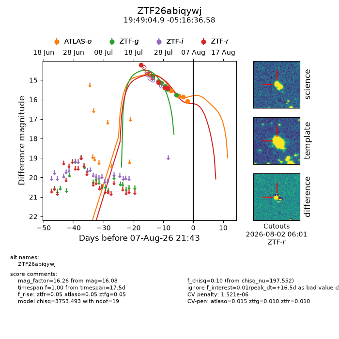
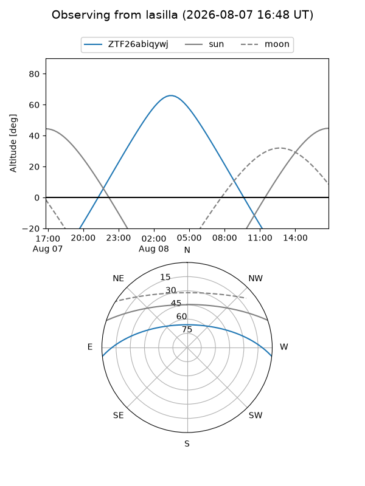
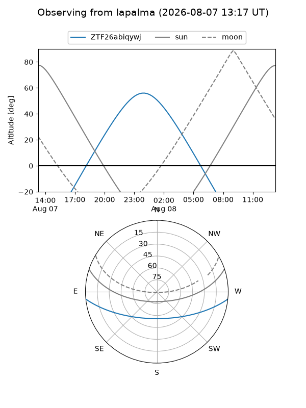
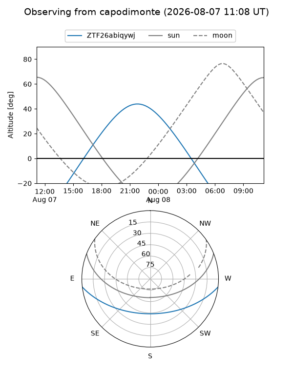
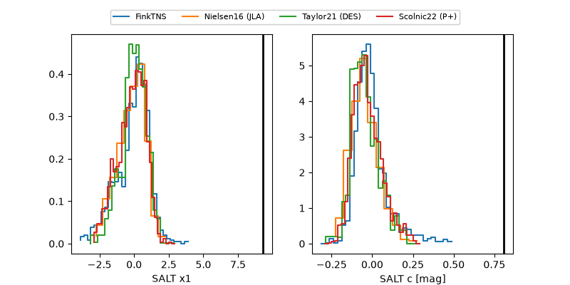

ZTF26abiqywj
Target ZTF26abiqywj at 2026-08-08 09:42
Aliases and brokers:
FINK-ZTF: ztf.fink-portal.org/ZTF26abiqywj
Lasair-ZTF: lasair-ztf.lsst.ac.uk/objects/ZTF26abiqywj
ALeRCE-ZTF: alerce.online/object/ZTF26abiqywj
Direct TNS query: direct search
alt names
ZTF26abiqywj (ztf,fink_ztf)
Coordinates:
equatorial (ra, dec) = 297.2702,-5.27683
equatorial (HMS+DMS) = 19:49:04.85,-05:16:36.58
galactic (l, b) = (34.7819,-15.21784)
Flags:
peak dt: +17.0
likely cv: !!
Photometry:
last atlaso=16.08, ztfg=15.76, ztfr=15.42
5 atlaso, 6 ztfg, 4 ztfr detections
Lightcurve

Visibility



Additional plots
